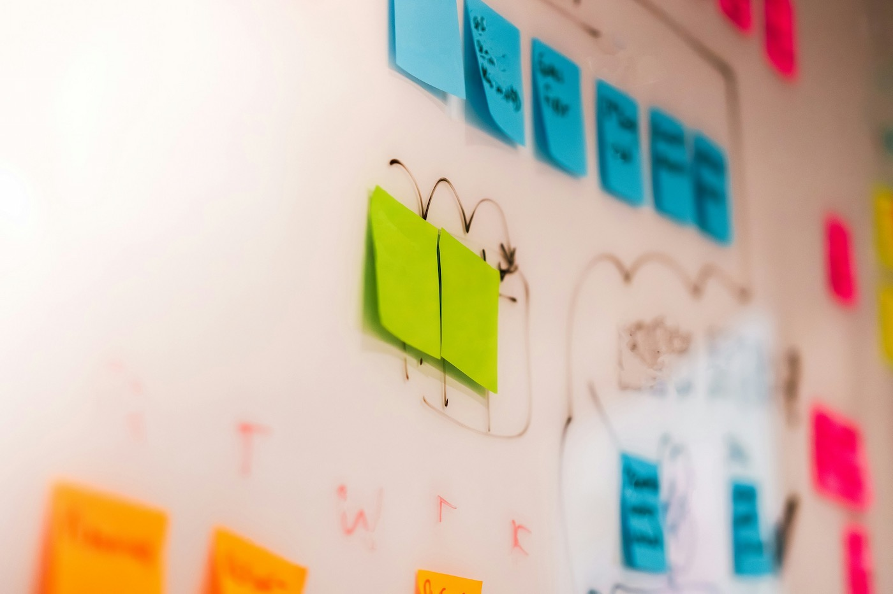
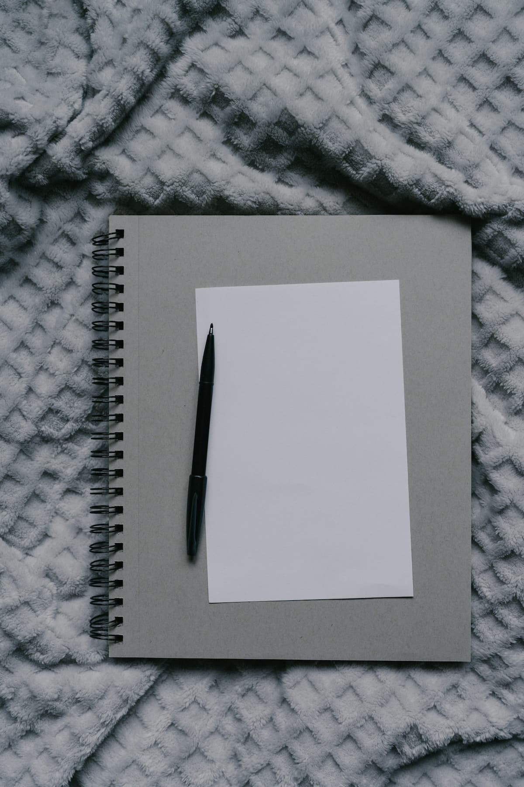

Wat je krijgt
Wat er aan het einde ligt
Geen rapport, maar direct bruikbare standaarden.
- Procesoverzicht: wie doet wat, wanneer en met welke standaard.
- 2–4 SOP’s als checklists voor terugkerende taken.
- Templates voor les, toets en practicum (gedeelde basis).
- Afspraken over eigenaarschap, onderhoud en onboarding.
Wat je in de praktijk merkt

Minder ruis en minder opnieuw uitvinden.
- Minder afstemming doordat basiskeuzes vooraf vastliggen.
- Sneller voorbereiden door herbruikbare formats en checklists.
- Consistentere uitvoering binnen het team, ook bij vervanging.
- Standaarden maken continue verbetering mogelijk: verbeter je de standaard samen, dan verbetert iedereen automatisch mee.
- Rust in piekweken door een vaste route.
Werkwijze

1) Kennismaking
We kiezen focus: welke 1–2 processen leveren nu het meeste op.
2) Teamworkshop
We maken het procesoverzicht en werken SOP’s en templates samen uit.
3) Borging
We spreken eigenaarschap af: onderhoud, versies en een simpel verbeter-ritme.
Kennismaking aanvragen
Stuur een korte mail met drie dingen. Dan plannen we een kennismaking.

- School + plaats/regio
- Teamgrootte van de vaksectie
- Wat jullie willen bereiken en waarom (2–3 zinnen)
Geen documenten nodig. Dit is genoeg om te starten.
Privacy
GA4, geanonimiseerd (IP). Geen marketingcookies.
Mail-link opent je e-mailapp. Je mail wordt alleen gebruikt om te reageren.
Vragen? Mail naar info@klaslab.nl.